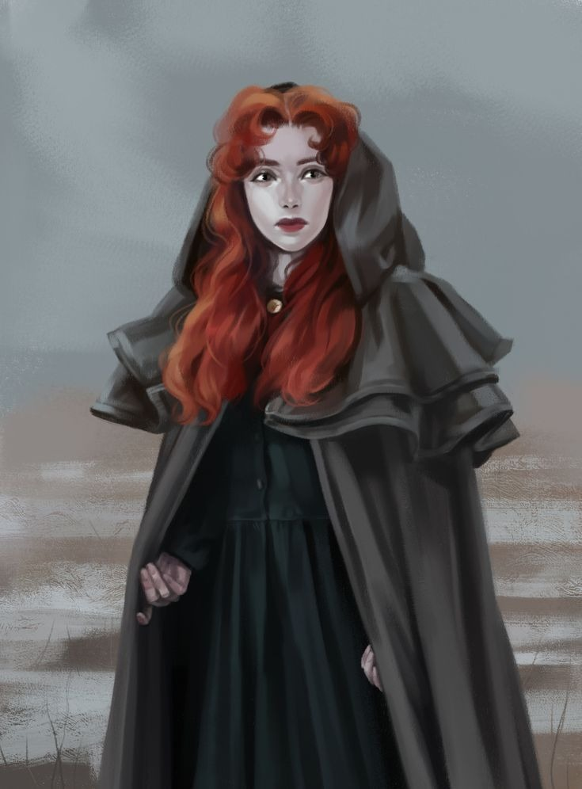

Maud Corwen
| Maud Corwen | Warden of the Wellheads, head of House Corwen and holder of the Guild lease · Human, of the spring country · Brightwater, the Sapphire Wells · as of the spring the north declared war on the south, about 732 IC |
| Epithet | Warden of the Wellheads the lease’s own title, and the only one she uses; the Stair calls her the Landlady, the Kharven ward-cutters call her worse every time they pay for a cask, and the old keepers on the steps call her the Night Tender, because she goes down to the lip herself after dark, which no Warden before her has done |
| Concept | She holds the key to everyone’s magic, and she can turn it off. |
| Stat line | Stage X Realization · Master (Fire) Level 260 · Refined · Ferrule Body X Mastered, IV · Fate Studied 20%, II · Lenses: home + 1 |
| Combat grammar | Ground; she does not fight you, she ends the terms on which you were fighting |
| Aura | color: Phreatis’s copper-green, the green old water leaves on a copper basin, with Solfatara’s deep sulfurous red fuming up through it at the edges like steam off a hot pool at dusk · texture: wet, warm, heavy, mineral · shape: none; it seeps, the way a spring comes up through a field, and lies on the ground around her in a shallow sheet · feel: the smell of sulfur and wet stone, a hum in the teeth that everyone near her stops hearing after a minute, and the uncomfortable sense of being on someone else’s property |
| How she moves | slowly, with her hands inside her cape, the hood up; she stands with her head tilted a little to one side, which in a Corwen means she is listening to something else as well; she does not hurry anywhere, because on her own ground nothing that matters happens without her |
| Stack | on her own ground, sustainable 410 in Attunement, and Stability 380, Synergy 390, Yield 340, Capacity 320, Regeneration 340, Filtration 310, Command 280 and Sovereignty 280; off it, a step lower on the hidden scale in every Vitality Sub-Stat and nothing refilling · cap two steps on the hidden scale over the sustainable figure · layers: KINGFISHER! for one, KINGFISHER! and HOTWELL! together, or DEADWATER! alone, filling the cap |
| Bonded weapon | the Warden’s key, which is not a weapon, and is |
| Kit | a tender’s night-cape of charcoal wool with a deep hood and a double shoulder-cape, over a plain dark green gown buttoned to the throat with one brass button; under the cape on a brass chain, the piece people talk about first and never see: the Warden’s key, a brass key the length of her hand |
| Voice | ”Time, ladies and gentlemen, please. No, take your time. I have rather a lot of it, and you, as it turns out, have a little less than you were sold.” · speaker type: a publican’s daughter grown into a landlord of the world, who is very pleasant about it |
| Next gate | Stage XI, Dissonance · Catalyst: contact with a truth capable of ending her · holds at Level 301, and she stands at 260: Level and Catalyst are both wanting |
I. Identity
| Field | Value |
|---|---|
| Full Name | Maud Corwen |
| Pronunciation | MAWD KOR-wen |
| Alias / Title | Warden of the Wellheads · the Landlady · the Night Tender |
Also Known As
| Name | Who says it |
|---|---|
| the Warden | the whole house, and the lease |
| the Landlady | the Stair, the sects and the southern table |
| the Night Tender | the old keepers on the steps, fondly |
| Maud | everyone in Brightwater, to her face; she insists |
| Field | Value |
|---|---|
| Race / Lineage | Human · House Corwen of Brightwater; no grip, no eye and not much blood, and every gift of the ground: raised in the kept pools from the day she was born |
| Age | Thirty-three |
| Family | her aunt Isolde Corwen, Warden before her, who died at the lip of the Hotwell with her hand on the key; her mother, a keeper on the barge road; a great many cousins, all of them on steps |
| Realm / Faction | House Corwen · Warden of the Wellheads, holder of the Guild lease on every worked Wellspring site from the Wellheads to the southern sea · seated at the southern table, which needs her ground |
| School and sect rank | the Hotwell Stair; the First Soak, the Silence at eleven, the key at twenty-four · the Accord files her Master, and adds a note that this holds only within ten miles of a ring |
Renown
| Among | What they say of her |
|---|---|
| the public | that she could turn off the world for two hundred miles with a word to a chain of old people on steps, and that she is the kindest landlord in the South |
| the sects | that she sells the hour honestly and closes it without warning |
| the Guild | that she is their lessee, their partner and their permanent problem, and that nobody can find the wax |
| the house | that she is the best Warden since Jennet, and that she has never once been seen to drink the water |
| Field | Value |
|---|---|
| Catalyst Event | Woke at four in the home pool with her aunt’s hand on her head, which is late for a Corwen; the cousins say she was listening |
| Refusal | She will not close a ring on the villages downstream, whatever is paid for it |
| Conviction | The water keeps faith, and so does she; somebody has to keep it on the days the water doesn’t |
II. Soul Architecture
| Field | Value |
|---|---|
| Level | 260; it holds Realization (230), and no Residual Strain builds in her short of 300 |
| Temperance Stage | X, Realization · Master |
| Path | Body X Mastered · Fate Studied 20% · the Shell grown huge in the pools; the keeper’s drift into the shallow end of Fate, without ever holding a thread |
| Mastery | Body IV, Luminous: the lead, read from Level under Realization’s ceiling; the house still calls the Warden’s chair Resonant · Fate II, Drawn: Studied, two behind and capped there, with no grip by blood or blessing, the keeper’s drift into the shallow end without ever holding a thread |
| η | about 0.97 through the Shell, at Body IV, and on her own ground the ground gives her more besides |
| Soul Crystal | Fire |
| Crystal State | Refined, and humming |
| Class | Ferrule · the soul’s name for the ring at the lip of a pool, which decides how wide anyone may pull · gives: the right to be the ring, so that what passes through her ground passes through her; the skill Hours at the roof of her Stage · shapes: her points fall to the ground she stands on, and almost none to the hand · evolved from: Keeper, offered at Glory; Tender at Refraction; Ferrule at Transcendence; it evolves as her Body Mastery rises |
III. Wellspring Harmonizations
| Wellspring | Folk name | Kind | Depth | Got from | What it bends in her | Note |
|---|---|---|---|---|---|---|
| Phreatis | the Waters of Memory | Medium | governing | the Hotwell, her First Soak, the day she was born | what is lived sinks into the deep water and comes back whole long after; the pools remember everyone who has bathed in them, and she can read what they remember | Sylorin · dissolution · copper-green · its failure is the aquifer’s: a false memory comes back up as readily as a true one, and nothing can be fished out of the water on its own |
| Solfatara | the Fume | Wild | deep | the fumaroles above the Cask Yards, where she sat out the Silence at eleven | pressure let out forever and never saved up; she stands in a fight the way a hot spring stands in a field | Valmir · sublimation · deep sulfurous red · interrupt the release and the pressure finds its way out through whatever is weakest |
IV. Primary Stats
| Primary | Total | Mean |
|---|---|---|
| Vitality | 1,420 | 177.5 |
| Ardency | 740 | 92.5 |
| Gnosis | 1,070 | 133.75 |
| Dexterity | 300 | 37.5 |
| Harmonics | 1,920 | 240 |
| Resilience | 1,330 | 166.25 |
| Tempering | 1,360 | 170 |
| Dominion (seven, Throne apart) | 1,140 | 162.86 |
| Throne | not opened | · |
| Field | Value |
|---|---|
| Pool | 9,280 |
| Spent | 9,280 |
| Unspent | 0 |
V. Sub-Stats
| Primary | ||||||||
|---|---|---|---|---|---|---|---|---|
| Vitality | Fortitude 150 | Absorption 120 | Constitution 160 | Hemostasis 90 | Regeneration 340 | Filtration 310 | Tolerance 150 | Threshold 100 |
| Ardency | Flux 260 | Alacrity 70 | Depth 120 | Penetration 60 | Compression 30 | Cascade 90 | Overchannel 40 | Density 70 |
| Gnosis | Perception 160 | Acuity 120 | Forecast 90 | Fluency 70 | Retention 220 | Analysis 190 | Cognition 100 | Vigilance 120 |
| Dexterity | Celerity 40 | Reflex 60 | Finesse 30 | Economy 90 | Evasion 30 | Grapple 10 | Feint 10 | Sequence 30 |
| Harmonics | Attunement 410 | Projection 190 | Breadth 220 | Stability 380 | Empathy 90 | Synergy 390 | Axis 90 | Suppression 150 |
| Resilience | Integrity 160 | Ward 150 | Persistence 120 | Anchoring 190 | Fortification 260 | Hardening 40 | Oath 310 | Continuity 100 |
| Tempering | Clarity 120 | Overflow 150 | Maturity 120 | Coherence 120 | Yield 340 | Ceiling 90 | Capacity 320 | Longevity 100 |
| Dominion | Radius 150 | Sovereignty 280 | Sense 160 | Gravity 90 | Pressure 180 | Command 280 | Fate 0 |
Field
Note
Value
The house’s lean, worn by its Warden: Harmonics carries her, Attunement at 410 and Stability and Synergy at 380 and 390, because whatever the ground is doing is doing it to her; Yield and Capacity at 340 and 320, Regeneration and Filtration at 340 and 310 from the pools, Oath at 310 from the keys and terms, Command and Sovereignty at 280 from her ground in a very narrow legal sense. Dexterity is a clerk’s. On her ground she is one of the most dangerous people in the South. Ten miles from a ring she is a Stage X with a Dexterity of 300, a bad sleeping habit and nothing refilling.
VI. Force of Hand
| Measure | Figure | Feats | Carried by | Note |
|---|---|---|---|---|
| Strike Force | Penetration 60 | none; she has people for that | Penetration 60 | |
| Lifting | Constitution 160 | · | Constitution 160 | |
| Travel speed | Celerity 40 | · | Celerity 40 | she walks downhill without hurrying |
| Reaction | Reflex 60 | · | Reflex 60 | |
| Durability | Fortitude 150 | stood in the Hotwell’s back-pressure when her aunt’s ring blew, and walked out of it | Fortitude 150, Regeneration 340 | on her ground she mends while you watch; off it she does not |
VII. Aether Flow
| Measure | Figure | Note |
|---|---|---|
| EU Reserve | 5,640,531 EU | by the law of reserves at Level 260, about 5.64 × 10⁶ |
| Held as | Charge 85%, Essence 15% | the Shell, grown huge in the pools |
| Flux Density | 200,000 EU/g | |
| AU/s | 194,000 | Flux Density times a yield of 0.97; recomputed at Body IV (it read 200,000 at the old V) |
| From full | empties in about 29 seconds at full output, Starvation at about 26 | on her own ground it refills nearly as fast as she can spend it, and that is the whole point of her |
| Recovery | on the Wellheads, as if there were a hole in the bottom of the world; on ordinary ground, ten percent a minute; on lean ground, a crawl, and she will tell you the air is thin | Soaked; the Hum |
Spending tells
| Reserve left | What shows |
|---|---|
| half | the red comes up under the green in her aura, and steam rises off her hair in the cold |
| a quarter | the hum in everyone’s teeth stops, all at once, and people look round for it |
| a tenth | her left ear starts to ring and does not stop; she stops talking loudly |
| past that | the pressure she has been letting out finds its way out through whatever in her is weakest, and blood comes from the left ear |
VIII. Traits
Full accounts: Maud Corwen — Abilities
Every Trait reads at her lead Mastery, Body IV.
| Trait | Kind | Source | Path and Form | Gates | What it does | Limit | Tell | Cost | Counter | Numbers |
|---|---|---|---|---|---|---|---|---|---|---|
| SOAKED | Inherited | Inherited, House Corwen | Body · the ground, no blood · Shape | none | Raised in the fat: on rich ground she fills far above her Stage, and Aether seems to find her; her Regeneration and Filtration run high at home. | on lean or ordinary ground the gift simply stops, and her Vitality falls a step on the hidden scale | none to the eye; she gleams a little | nothing | fight her ten miles from a ring | intake far above her Stage at home |
| THE HUM | Inherited | Inherited, House Corwen | Fate, the keeper’s drift · the forks · Read | none | She feels every ring on the chain from the Wellheads to the sea the way she feels her own pulse, and can pass a turning, a warning or a price down the forks faster than a horse. | off the ground the silence is a physical thing: she does not sleep, food tastes of nothing | her head tilts to one side | the silence, abroad | cut the chain; take a keeper off a step | every ring under lease |
| THE BOOK | Primary | Lived | Fate, the keeper’s drift · Phreatis · Bind | Stage VIII | A name she enters in the hour-book fills on her ground as if it owned the place, and anyone not entered gets a trickle. As Warden she can enter a name standing at any lip on the chain, by speaking it into the forks. | it works on leased ground with a ring on it, and nowhere else | she says your name, and the pool hums a note higher | a name entered is a name owed: she keeps every hour she gives away in her head | step off her ground; buy your own cask | one terrace to a whole site |
| NEVER DRINKS | Secondary | Lived | Body · Phreatis · Read | none | The house’s old Tongue turned inside out: she will not taste the water, and she can tell by smell alone, at a pace off, which pool a cask was filled from and whether it was cut. | she has given up the Tongue, and with it everything the Tongue would tell her that the forks do not | she lifts a cup to her face and sets it down full | every toast she has ever been offered | none needed; it is the only thing about her that costs her nothing she admits | at a pace |
IX. Skills and Abilities
Full accounts: Maud Corwen — Abilities
Skills
| Skill | Cues / mechanics | Learned where | Priced by (Sub-Stats) | Mark | Rank |
|---|---|---|---|---|---|
| The Hours | Hot and Cold, the Book, Time, Deadwater, the Eviction; the brass key and the ring | the Hotwell Stair, from her aunt | Attunement, Synergy | Mastered | Master |
| The lease | every clause, every limitation of actions, by heart; she learned to read from it | the house | Retention, Analysis | Mastered | Expert |
| Reading the tundish | what color is passing at the lip, from the door | the steps | Perception, Attunement | Mastered | Expert |
| Pricing an hour | what a sect will pay for the book, and what the Dyers will stand | Brightwater, and the Kingfisher Steps | Command, Analysis | Mastered | Expert |
| Tending | bleeding the pressure at a lip with a fork and a lamp, at night | the old keepers on the steps | Stability, Capacity | Mastered | Expert |
Techniques
| Technique | Kind | Mark | Source | Path and Form | Gates | What it does | Limit | Tell | Cost | Counter | Numbers |
|---|---|---|---|---|---|---|---|---|---|---|---|
| THE WARDEN’S KEY | Signature Art | Mastered | Lived | Body, with the keeper’s Fate drift · Solfatara through Phreatis · Shape and Bind | none | the power to open and shut the ground’s supply of Aether to everyone standing on it | only leased ground with a ring on it; a closed ring takes nobody’s reserve, it only stops the refill, and everyone finds out late | the hum going out of the morning | from nothing for an hour sold to the whole of her reserve and her hearing for Deadwater | arrive full and finish fast; steal the key; salt the ground the night before; fight her ten miles from a ring | see the moves below |
| SLACK WATER! | Signature Technique | Mastered | Taught | Body · Solfatara · Shape | the Warden’s key | ”Time, ladies and gentlemen, please.” A quarter-turn of the key, by hand, with the ring in reach: the ground under one terrace goes lean in ten breaths, and nobody on it refills. It is the house’s Deadwater, and she is the one old keeper who does it often. | ten breaths’ warning, and she gives it every time, because the house does | the call, in a publican’s voice | about 4% of her reserve; it kicks back through the key into her arm as a scald and a hum to the bone | finish the fight in ten breaths | one terrace |
| ON THE HOUSE! | Technique | Mastered | Taught | Body · Solfatara · Shape | the Warden’s key | She opens the ring fully for one breath: everyone on the book fills, every guard’s coat flares, and the pool behind her jumps as the pressure drops. | one breath; the pool jumps, and anything standing in it is scalded | a blue flare on every coat at once | about 2% of her reserve | don’t be standing in the pool | everyone on the book |
| READ THE TERMS! | Technique | Mastered | Taught | Fate, the keeper’s drift · Phreatis · Bind | THE BOOK | A keeper’s Command, with the key raised: anyone on the book feels the line of their terms on their window in the middle of whatever they are doing, and the line says what they owe her. | only those on the book; a man who never bought an hour has no terms to read | the key raised over her head | about 1% of her reserve | never buy an hour from a Corwen | everyone on the book |
| CASK! | Technique | Drilled | Taught | Body · Phreatis · Shape | none | A sealed cask of Wellhead water stove in underfoot: for a minute or so a small circle of ordinary ground is fat, and she will fight in it. | a minute; a circle a few paces across; one cask | the stave splitting and the smell of sulfur | a cask, at cost | let it run out | one circle |
Releases
| Release | Kind | Mark | Source | Path and Form | Gates | What it does | Limit | Tell | Cost | Counter | Numbers |
|---|---|---|---|---|---|---|---|---|---|---|---|
| KINGFISHER! | First Release | Mastered | Lived | Body · Solfatara · Shape | Stage IV | ”Kingfisher.” The First Release comes up as a blue steam off her skin, the house’s color, and her Harmonics and Vitality read a step high on the hidden scale, nothing past the roof of her Stage. | the steam shows exactly where she is | blue steam rising off her through the hood | about 18,000 EU a second; on her ground she refills faster than that | lean ground | +1 step Harmonics and Vitality |
| HOTWELL! | Second Release | Mastered | Lived | Body · Phreatis · Shape | Stage VII | ”Hotwell.” She opens THE KEPT POOL around her. With KINGFISHER! under it, her Harmonics and Vitality stand two steps over her line. | it fills the cap with the First | the ground goes wet and steaming in a ring | about 30,000 EU a second; with KINGFISHER! under it, 48,000 | anything that breaks the Domain | +2 steps with the First |
| DEADWATER! | Third Release | Drilled | Lived | Body · Solfatara · Shape | Stage IX | ”Deadwater.” She stops being the keeper of the ring and becomes the ring: every pool within her reach closes through her body at once, and the head of pressure that has nowhere to go goes into her. For as long as she holds it, nobody near her refills but by her, and her Harmonics and Resilience read two steps high on the hidden scale. | the pressure rises behind her the whole time; when she lets go it comes out through whatever in her is weakest, and her left ear is already half gone | the hum stopping for a mile, and her left ear bleeding | about 60,000 EU a second, and the back-pressure, which is not counted in EU | outlast her; she cannot hold it long | fills the cap alone |
| THE KEPT POOL | Domain | Mastered | Lived | Body · Phreatis, vented by Solfatara · Shape | Stage VIII | Its law: nothing fills here but by the book. Inside it the ground goes wet and steaming and the hum comes up, and no one draws a breath of Aether from it that she has not entered; those she has fill as if they owned the place. When she lets it go, the pressure behind it lets go too, and the pool jumps. | the head rises the whole time it is open; held too long, something begins to breed in it | the ground going wet under everyone’s boots | opened by HOTWELL! | a Domain that brings its own supply; a man with a bottled Draft and a short plan | a terrace across; on the Wellheads, whatever she likes |
X. Spirit Axes
| Person | Bond | Axis weight | What flows across it | Note |
|---|---|---|---|---|
| Isolde Corwen | her aunt, Warden before her, dead at the lip | heavy | the key, and the hand on her head in the home pool | |
| the keepers on the steps | hers | heaviest | every turning on the chain, and the hum | she sits the night shift with them |
| the villages downstream | not hers, and hers | moderate | what the water carries | she pays for the physicians out of her own purse and does not say why |
XI. Resistances
| Against | Resistance | Carried by | Note |
|---|---|---|---|
| A long fight on her ground | overwhelming | SOAKED, THE WARDEN’S KEY | she fills; you don’t |
| Poison and sickness | high | Filtration 310, Regeneration 340 | at home |
| A quick hitter with a full reserve | poor | Dexterity E | the classic answer |
| Anything ten miles from a ring | poor | · | she is what her Stage says, with nothing refilling |
| Silence | none | · | she does not sleep off the ground |
XII. Physical Description
| Feature | Description |
|---|---|
| Build | tall, and slender under the cape, with the long pale hands of someone who has spent her life wet; she fills a room by voice, which is big and comfortable and slightly too loud, as people talk who grew up beside a noise |
| Hair | a deep fire-red, thick and curling, worn long and loose to the waist; damp curls at the temples, as every Corwen’s are |
| Face and eyes | a pale oval face, very still at rest, with a straight nose, a small grave mouth and dark brows; the eyes are a gray-green, the color of old water in a copper basin; the smile, when it comes, is broad and sudden and takes up the whole face, and it comes when she wants something |
| Marks | none to see; her left ear is half deaf from Deadwater, and she turns her right ear to you, which reads as the Corwen tilt |
| The night-cape | a tender’s cape of heavy charcoal wool with a deep hood and a double shoulder-cape to throw off the steam, the kind the old keepers wear to bleed the rings after dark; no Warden before her has worn one |
| The gown | plain dark green wool, buttoned to the throat, with one brass button at the collar, the only brass on her that anyone sees |
| The keeper’s coat | the senior keeper’s coat in Kingfisher blue, brass-buttoned, Rare and worth a good horse; she wears it to the southern table and the Lease Court, and nowhere else |
XIII. Psychology
| Field | Value |
|---|---|
| Core Wound | Her aunt died at the lip of the Hotwell with her hand on the key, in the back-pressure of a ring she had held shut a day too long, and Maud was the tender beside her who did not open it in time |
| Flaw | She will keep the house’s word |
| Desire | not known |
| Strength | She keeps faith with the people on the steps, every night |
| Loop | sell the hour, keep the terms, go down to the lip at night, say the forks ring true |
| Foil | the Yukari, who offer every month to walk the springs, and whom she declines every month with the same courtesy |
| Stress Default | louder, cheerier, and the head tilts further |
Voice block
| Field | Value |
|---|---|
| Speaker type | a publican’s daughter grown into a landlord of the world, who is very pleasant about it |
| Notices first | whether you are on the book, and how full you are |
| Speech length | easy and generous, with lease terms in it; long when she is selling, very short when she is closing |
| Wit | warm, dry and practical, a tavern’s wit |
| Accent features | the Wellheads’ Northern English, broad and comfortable, with lease terms dropped in like small change; “ladies and gentlemen”, “on the house”, “time, please” |
| House words and sayings | The Water Keeps Faith · “Time, please” · “On the house” · “Read the terms” |
| Oaths | ”by the ring”; “Jennet’s wax” |
| Contractions | always |
| Pet phrase | ”Take your time. I’ve got rather a lot of it.” |
| Stress shift | she quotes the lease |
| Grief shift | she goes down to the lip and tends all night with a fork and a lamp |
| Sample line | ”Time, ladies and gentlemen, please. No, take your time. I have rather a lot of it, and you, as it turns out, have a little less than you were sold.” |
XIV. Equipment
| Item | What it is | Grade | Rarity | Rung | Bonded | Multipliers | Shell draw |
|---|---|---|---|---|---|---|---|
| The Warden’s key | brass, the length of her hand, cut for the Hotwell ring and sealed on the whole chain | S | Unique | Kingsarm | yes | Attunement ×1.15 on leased ground | none |
| The night-cape | a tender’s cape, charcoal wool | plain | Common | · | no | none | none |
| The keeper’s coat | Kingfisher blue, brass-buttoned | plain | Rare | · | no | none | none |
| A cask | sealed Wellhead water, carried by a cask-man | plain | Uncommon | · | no | none | none |
| Item | Item Tier and stamp | Look | Maker’s mark | Wear and repairs | How it is shown off | What people say | Price |
|---|---|---|---|---|---|---|---|
| The Warden’s key | Storied | a plain brass key the length of a hand, on a brass chain | the Brightwater brass-wrights; the seal laid at the lease’s signing in 602 and renewed in each Warden’s Essence the day she takes it up | polished by small boys every morning; the bit worn bright | it is not; it stays under the cape, which the house thinks very odd | that it will turn for anyone who has taken the seal, and that some very quick careers have been made on that | not for sale, and the whole South would buy it |
| The night-cape | Plain | charcoal wool, a deep hood, a double shoulder-cape | a Brightwater tailor | scorched at the hem by steam | she wears it everywhere but the table | that the Warden dresses like a tender, and that she means something by it | a few silver |
| The keeper’s coat | Plain | the violent Kingfisher blue, brass buttons | the Dyers of Kingfisher Steps, at full rate | none | at the southern table, on purpose | that the Dyers charge her full rate and tell her so | the price of a good horse |
XV. Temperance Record
Level log
| Levels | Where they were earned |
|---|---|
| 1 to 80 | the pools, early and cheaply, as every Corwen climbs |
| 80 to 180 | a keeper on the steps; the night shifts; the Hotwell’s back-pressure the night her aunt died |
| 180 to 260 | the Warden’s chair from twenty-four; the war’s years; the southern table |
Stage ledger
| Stage | Name | Catalyst | Bought | The story in a line |
|---|---|---|---|---|
| I to III | Murmuring to Ascension | crisis | no | woke at four in the home pool; climbed on the ground and cheaply |
| IV to VI | Flourishing to Glory | crisis | no | KINGFISHER! as blue steam at fourteen, the year she tasted the Hotwell and stopped drinking; at Glory, a soul-cost taken to keep a tender’s oath, and the class Keeper |
| VII | Refraction | Draft | yes | a Draft bought at the source, as Corwens do; the Domain’s seed; the class Tender |
| VIII | Transcendence | crisis | no | the night her aunt died at the lip, and Maud took the key out of her hand and opened the ring; the first true Domain, and the class Ferrule |
| IX | Invocation | Draft | yes | bought at the source; DEADWATER! |
| X | Realization | crisis | no | the first Fork-Tuning as Warden, when she struck the posts from Brightwater to the barge road and every fork rang true, and the world answered: the Hotwell’s ring will no longer turn for any key but hers |
XVI. Fracture Log
| Event | Layer | Status | What it left |
|---|---|---|---|
| The left ear | Shell | open | half deaf from Deadwater |
| The Hotwell night | Core | open | the ring she did not open in time |
| Fourteen | Core | open | she has never drunk the water since |
Lore
Full account: Maud Corwen — Lore
Ties
| Person | Who they are to her |
|---|---|
| Isolde Corwen | her aunt, Warden before her |
| the Guild Accord | landlord, partner and permanent threat |
| the Dyers of Kingfisher Steps | who charge her full rate, and tell her so |
| the Kharven ward-cutters | who quench their chisels in her water at the price she sets, and say what they think of it |
| the Yan | who have shown her a count of sick foals |
| the Yukari | who offer every month to walk the springs |
| Cozbi Mahuo | who says the Corwen keep the water as the Lamberts keep the count and the Mahuo the dead |
| Edward Lambert | who keeps the count of the war, and has asked her twice what the Wellheads will charge the south for it |